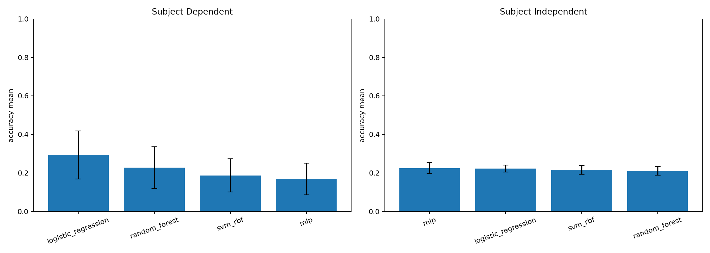
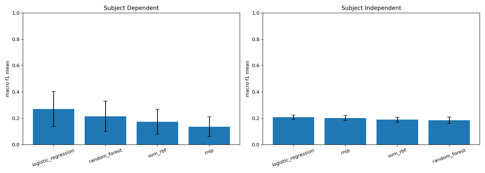
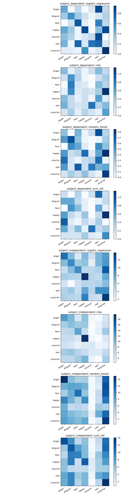

上传 zip 生成实时实验报告
不上传时显示默认基线报告；上传后会基于 zip 子集实时生成包含 Accuracy / Macro-F1 的协议报告（浏览器端推理）。
目录规范：
EEF_features/<subject>.mat，
save_info/<subject>_<date>_<session>_save_info.csv。
为获得稳定解析：首次点击“生成报告”时会加载 Pyodide（解析 `.mat`）与 JSZip（解压 zip），可能会等待一小段时间。
数据集概览
subject_dependent（被试内）结果
| 模型 | Accuracy (mean ± std) | Macro-F1 (mean ± std) | 折数 |
|---|
subject_independent（跨被试）结果
| 模型 | Accuracy (mean ± std) | Macro-F1 (mean ± std) | 折数 |
|---|
默认报告解析（方法说明）
静态图表（可用于汇报）

解析：用于比较模型整体正确率。若某模型在
subject_independent
下仍保持较高 Accuracy，说明其跨被试泛化能力更强。

解析：Macro-F1 对类别不均衡更敏感。若 Accuracy 高但 Macro-F1 低，通常说明模型偏向多数类别，少数情绪识别不足。

解析：观察混淆矩阵可定位“容易互相误判”的情绪对（例如 sadness 与 neutral）。这能指导后续特征工程与模型改进方向。